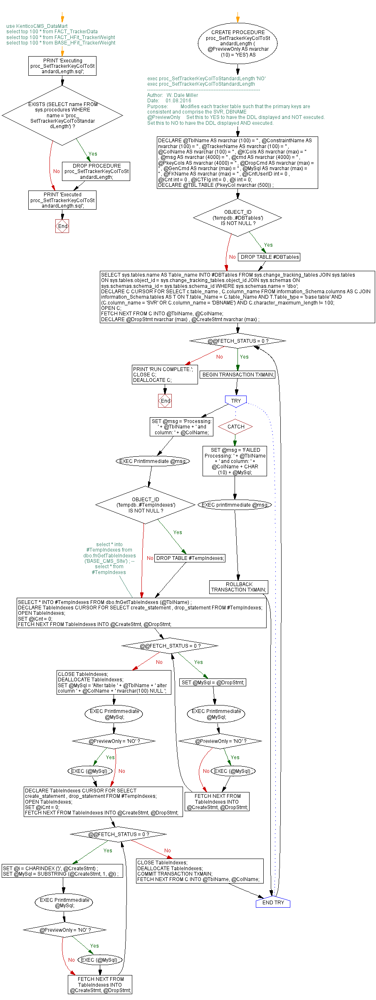

<a href="proc_SetTrackerKeyColToStandardLength2.png"></a>
-- use KenticoCMS_DataMart -- select top 100 * from FACT_TrackerData -- select top 100 * from FACT_HFit_TrackerWeight -- select top 100 * from BASE_HFit_TrackerWeight GO PRINT 'Executing proc_SetTrackerKeyColToStandardLength.sql'; GO IF EXISTS (SELECT name FROM sys.procedures WHERE name = 'proc_SetTrackerKeyColToStandardLength') BEGIN DROP PROCEDURE proc_SetTrackerKeyColToStandardLength; END; GO -- exec proc_SetTrackerKeyColToStandardLength 'NO' -- exec proc_SetTrackerKeyColToStandardLength CREATE PROCEDURE proc_SetTrackerKeyColToStandardLength ( @PreviewOnly AS nvarchar (10) = 'YES') AS BEGIN /*-------------------------------------------------------------------- Author: W. Dale Miller Date: 01.08.2016 Purpose: Modifies each tracker table such that the primary keys are consistent and comprise the SVR, DBNAME @PreviewOnly Set this to YES to have the DDL displayed and NOT executed. Set this to NO to have the DDL displayed AND executed. */ DECLARE @TblName AS nvarchar (100) = '' , @ConstraintName AS nvarchar (100) = '' , @TrackerName AS nvarchar (100) = '' , @ColName AS nvarchar (100) = '' , @KCols AS nvarchar (max) = '' , @msg AS nvarchar (4000) = '' , @cmd AS nvarchar (4000) = '' , @PkeyCols AS nvarchar (4000) = '' , @DropCmd AS nvarchar (max) = '' , @GenCmd AS nvarchar (max) = '' , @MySql AS nvarchar (max) = '' , @FKName AS nvarchar (max) = '' , @iCntUserID int = 0 , @iCnt int = 0 , @iCTFlg int = 0 , @i int = 0; DECLARE @TBL TABLE (PkeyCol nvarchar (500)) ; IF OBJECT_ID ('tempdb..#DBTables') IS NOT NULL BEGIN DROP TABLE #DBTables END; SELECT sys.tables.name AS Table_name INTO #DBTables FROM sys.change_tracking_tables JOIN sys.tables ON sys.tables.object_id = sys.change_tracking_tables.object_id JOIN sys.schemas ON sys.schemas.schema_id = sys.tables.schema_id WHERE sys.schemas.name = 'dbo'; DECLARE C CURSOR FOR SELECT c.table_name , C.column_name FROM information_Schema.columns AS C JOIN information_Schema.tables AS T ON T.table_Name = C.table_Name AND T.Table_type = 'base table' AND (C.column_name = 'SVR' OR C.column_name = 'DBNAME') AND C.character_maximum_length != 100; OPEN C; FETCH NEXT FROM C INTO @TblName, @ColName; DECLARE @DropStmt nvarchar (max) , @CreateStmt nvarchar (max) ; WHILE @@FETCH_STATUS = 0 BEGIN BEGIN TRANSACTION TXMAIN; BEGIN TRY SET @msg = 'Processing: ' + @TblName + ' and column: ' + @ColName; EXEC PrintImmediate @msg; IF OBJECT_ID ('tempdb..#TempIndexes') IS NOT NULL BEGIN DROP TABLE #TempIndexes; END; --select * into #TempIndexes from dbo.fnGetTableIndexes('BASE_CMS_SIte') ; -- select * from #TempIndexes SELECT * INTO #TempIndexes FROM dbo.fnGetTableIndexes (@TblName) ; DECLARE TableIndexes CURSOR FOR SELECT create_statement , drop_statement FROM #TempIndexes; OPEN TableIndexes; SET @iCnt = 0; FETCH NEXT FROM TableIndexes INTO @CreateStmt, @DropStmt; WHILE @@FETCH_STATUS = 0 BEGIN SET @MySql = @DropStmt; EXEC PrintImmediate @MySql; IF @PreviewOnly = 'NO' BEGIN EXEC (@MySql) ; END; FETCH NEXT FROM TableIndexes INTO @CreateStmt, @DropStmt; END; CLOSE TableIndexes; DEALLOCATE TableIndexes; SET @MySql = 'Alter table ' + @TblName + ' alter column ' + @ColName + ' nvarchar(100) NULL '; EXEC PrintImmediate @MySql; IF @PreviewOnly = 'NO' BEGIN EXEC (@MySql) ; END; DECLARE TableIndexes CURSOR FOR SELECT create_statement , drop_statement FROM #TempIndexes; OPEN TableIndexes; SET @iCnt = 0; FETCH NEXT FROM TableIndexes INTO @CreateStmt, @DropStmt; WHILE @@FETCH_STATUS = 0 BEGIN SET @i = CHARINDEX (')', @CreateStmt) ; SET @MySql = SUBSTRING (@CreateStmt, 1, @i) ; EXEC PrintImmediate @MySql; IF @PreviewOnly = 'NO' BEGIN EXEC (@MySql) ; END; FETCH NEXT FROM TableIndexes INTO @CreateStmt, @DropStmt; END; CLOSE TableIndexes; DEALLOCATE TableIndexes; COMMIT TRANSACTION TXMAIN; FETCH NEXT FROM C INTO @TblName, @ColName; END TRY BEGIN CATCH SET @msg = 'FAILED Processing: ' + @TblName + ' and column: ' + @ColName + CHAR (10) + @MySql; EXEC printImmediate @msg; ROLLBACK TRANSACTION TXMAIN; END CATCH; END; PRINT 'RUN COMPLETE.'; CLOSE C; DEALLOCATE C; END; GO PRINT 'Executed proc_SetTrackerKeyColToStandardLength.sql'; GO
Hide code
Visustin flow chart for T-SQL